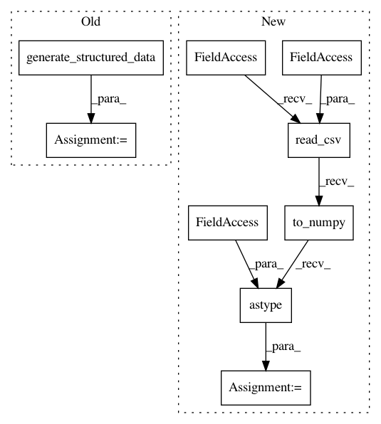

176d04bd5187c84f2cf9b89f84bbfe19d61c4c3d,tests/integration_tests/io_api_test.py,,test_io_api,#Any#,21
Before Change
image_x = image_x[:num_instances]
text_x = text_x[:num_instances]
structured_data_x = utils.generate_structured_data(num_instances=num_instances)
classification_y = utils.generate_one_hot_labels(
num_instances=num_instances, num_classes=3
)
regression_y = utils.generate_data(num_instances=num_instances, shape=(1,))
After Change
image_x = image_x[:num_instances]
text_x = text_x[:num_instances]
structured_data_x = (
pd.read_csv(utils.TRAIN_CSV_PATH)
.to_numpy()
.astype(np.unicode)[:num_instances]
)
classification_y = utils.generate_one_hot_labels(
num_instances=num_instances, num_classes=3
)
regression_y = utils.generate_data(num_instances=num_instances, shape=(1,))
In pattern: SUPERPATTERN
Frequency: 4
Non-data size: 9
Instances
Project Name: keras-team/autokeras
Commit Name: 176d04bd5187c84f2cf9b89f84bbfe19d61c4c3d
Time: 2020-08-01
Author: jin@tamu.edu
File Name: tests/integration_tests/io_api_test.py
Class Name:
Method Name: test_io_api
Project Name: jhfjhfj1/autokeras
Commit Name: 176d04bd5187c84f2cf9b89f84bbfe19d61c4c3d
Time: 2020-08-01
Author: jin@tamu.edu
File Name: tests/autokeras/adapters/input_adapter_test.py
Class Name:
Method Name: test_time_series_input_col_type_without_name